New Bern NC Waterfront Homes and
Waterfront Properties for Sale

Click Here
to search Waterfront Properties For Sale. If you don't see what you are looking for send me an email and we will find what you are looking for.
We hope you Enjoy New Bern NC's Top Real Estate Website to
search for Waterfront Homes and Waterfront Properties keep scrolling down
to view some of our featured waterfront listings.
If you don't see what you are looking for here, let
us know what you are looking for and we will find it for
you
Realtors Steve and Jana J.
Tyson are New Bern's Waterfront Real Estate Experts.
%20(640x565).jpg)
The Tyson Group's Mission Statement
To be dedicated to superior customer care through open
communication, personalized attention, and above all, honesty. We
will continuously provide diligent and ethical services; and build
relationships with our clients, motivating them to recommend us
to friends and family.
There are Hundreds of Real Estate Brokers in the New Bern area, so why would you choose the
Tyson Group?
Click Here to find out why!
|
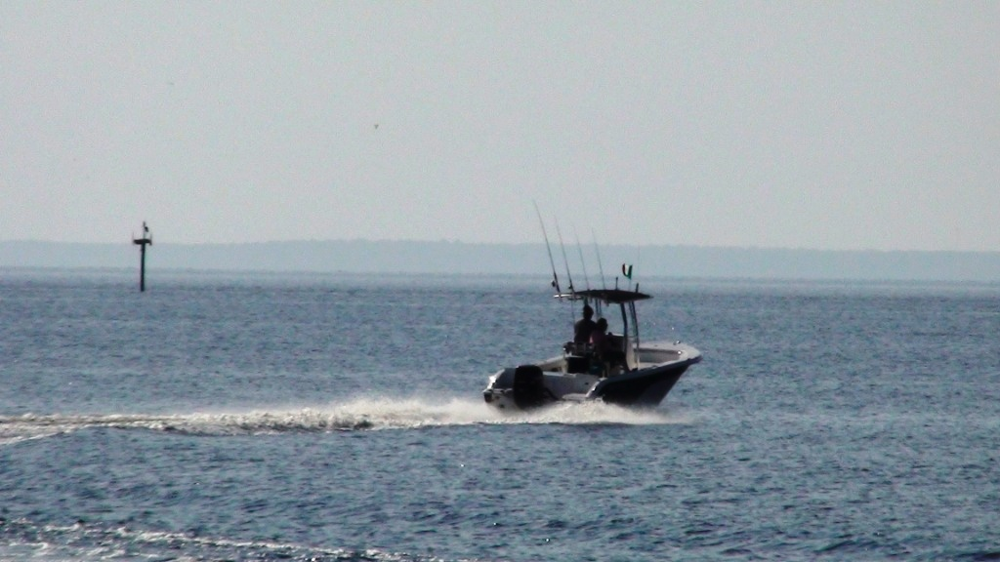
The picture shown above was taken about 2 miles down river from Historic
Downtown New Bern.
The Neuse River is close to 3 miles wide at this point and before it reaches the Pamlico Sound it
becomes the widest river in the United States.
With 2 big rivers, miles of deep
creeks, a mild climate, and
reasonable property taxes it's no wonder that we are seeing retiree's moving to
New Bern from as far away as Florida and California.
Waterfront communities on the Neuse in
and around New Bern, N.C. include Historic Riverside, Historic downtown New Bern, Bridgeton, James City, Old Cherry Point Road, River
Bluff, Neuse Harbor, Carolina Pines, and the Harlow area,. Neuse River waterfront communities in Pamlico County include
Minnesot Beach and Oriental.
For more info on the Neuse River Click here
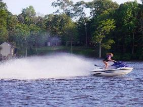
New Bern is surrounded by wide rivers and deep navigable creeks.
Combine this with a close proximity to the Pamlico Sound, the intra-coastal
waterway, the Atlantic Ocean, and you can see why sailors and power boaters from around
the country are making New Bern their home.
Boaters, sailors, and
fishermen are moving to New Bern,
Oriental, and the surrounding areas to enjoy the natural beauty and serenity of the Neuse River;
and all it's tributaries. While New Bern has a distinct 4 seasons the
winters are generally mild and it is not unusual to see fishermen and sailors
on the water year around.
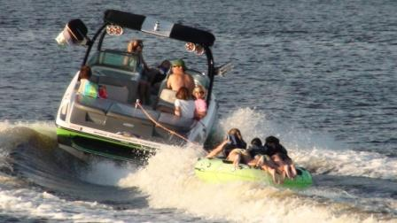
The Trent River, while not as majestic as
the Neuse,
is better protected from storms and high winds. The deep water near the shore
line makes for a better choice for those wanting to dock a boat in their back
yard. The calmer waters make recreational boating a favorite
pastime.
 Most any sunny day will bring out the water skiers,
boogie boarders, jet skiers and bass fishermen.
Waterfront Communities in
the New Bern N.C. area on the
Trent River include Riverbend, Trent Woods, Old Towne,
Madame Moore Lane, and the Brice's Creek, Goose Creek area.
For more information on the Trent
River
Click Here
Most any sunny day will bring out the water skiers,
boogie boarders, jet skiers and bass fishermen.
Waterfront Communities in
the New Bern N.C. area on the
Trent River include Riverbend, Trent Woods, Old Towne,
Madame Moore Lane, and the Brice's Creek, Goose Creek area.
For more information on the Trent
River
Click Here
Oriental

Look at the picture above and it is easy to see why
serious sailors love to live on or near the Neuse River. The Neuse is around 1 mile
wide in Historic downtown New Bern. By the time you reach Fairfield Harbour it
widens out to 2-3 miles across. Just a little upriver from Fairfield
and she is really rocking.
Across from Oriental is the Adams Creek section of the
Intracoastal waterway. A short ride down this section will spill you
into the quaint historic town of Beaufort.
Below you will find some of our waterfront homes and properties for sale.
A once in a lifetime waterfront opportunity-YOU
MISSED THIS ONE-JUST SOLD by the Tyson Group!!

Deep Water on the Trent River at an unheard of value.

8000 heated square feet including one of the areas only finished
basements.

The Southern style wrap around porch will set all your worries free.

Just a few of the features include hardwood, high ceilings,
restaurant grade appliances, enormous master with scenic views of
the Trent River.

This house has to many special features to list and must be seen to
appreciate.

Call The Waterfront Realtor today to view this one of a kind home.
252 514 9157
612 Madam Moore's Lane
Fantastic Waterfront home
Incredible Sunsets
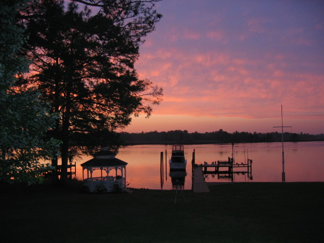
Deep water-keep your large boat in your back yard
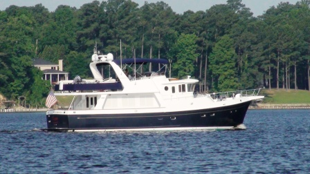
Fun in the sun
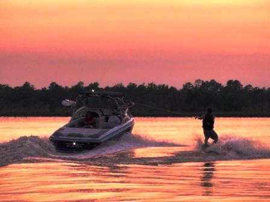
Grand kids will love it here

This nearly new home has it all. Custom built in 2006 this 3600
square foot home has all the bells and whistles.
In addition to the attached double car garage is a detached is a 3
car garage with a 800 square foot apartment that could be a mother
in law quarters.
Call your local waterfront real estate authority today, Steve Tyson at 252
514 9157 for more information.

Lightning rarely strikes the same spot twice
Unbelievable waterfront home in Fairfield Harbour.
Only $289,000

Nearly new home on a well protected Deep Water Canal in Fairfield Harbour,
New Bern's only gated community with a 24 hour security guard.
Fairfield offers golf, tennis, marinas, fishing, miles of pedestrian
friendly roads, and many different clubs and organizations. Perfect for retirees looking to stay active in a
safe neighborhood.

AMAZING INTERIOR! Very upscale and tasteful! Bulk headed lot with
dock and boat slip. Spacious open floor plan has 9' ceilings, bamboo
floors, maple cabinets with granite tops, and a 3-car garage. Walk
from your back deck and be on your boat in just a few steps.
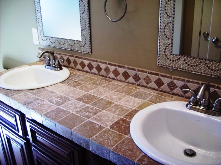
Lots of custom touches with this home. The owner is a custom home
builder and added many upgrades such as tile vanity tops.

The kitchen, shown on the right is open and bright. The granite
countertops match perfectly with the bamboo floors.
The picture shown below, is an aerial shot of the Fairfield Harbour
Community. The protected harbor is only a short distance from the
mighty Neuse River which is several miles wide at this point and
perfect for sailing, power boating, and fishing.
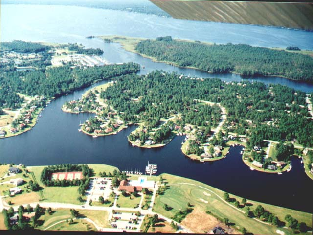
How could you not love this home? For more pictures and a virtual tour
of this gem
send an email to
SteveTyson@ncmove.com
Waterfront Home for $225,000?

Protected, deep waterfront. Keep you sailboat or motor yacht right
in your back yard.
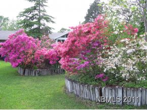
Mature landscaping

Light and open sunroom. What are you waiting for. Call Steve Tyson,
your Waterfront Authority, at 252 514 9157 for more information.
Steve's Best valued waterfront lot
Only $110,000

Priced to sell quickly at $110,000 this is a great
buy. No time requirements to build. We have plans you can build
starting at $210,000.

Park your boat, any size, right in your back yard. No marina needed.

This lot is high and dry. The sandy soil makes
building quite easy. Only a short distance to the open water of the
mighty Neuse River. Buy now and build later if you desire. Or if you
prefer you can build now.

Riverbend Waterfront Gem $225,000
Too late- Sold
.JPG)
This home has been remodeled and is in excellent
condition. Located on the Riverbend you can keep a large motor yacht
in your backyard. Just a few hundred down the deep Riverbend canal
and you are in the magnificent Trent River.
.JPG)
Bright and open floor plan
.JPG)
Spacious master bedroom
If you want convenience this waterfront home is
hard to beat. The canal is protected from bad weather and yet it is
only a few minutes from the Trent River. And best of all it can be
yours for only $225,000.
Great waterfront home for the money.
For more information call Steve today at 252 514
9157.
104 Vida Lane
Magnificent Views of the Mighty Neuse River for only $375,000
JUST SOLD
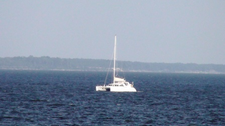
Over 2 acres of rolling hills on the miles-wide Neuse River.
Enjoy cool breezes while sitting on a bench in your
meadow-like yard.
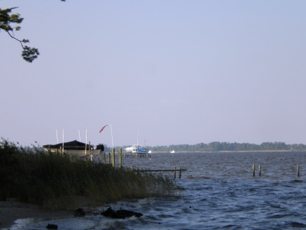
The pictures say it all
.JPG)
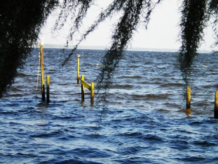
The kitchen, living room, and dining room are all open and
offer waterfront views.
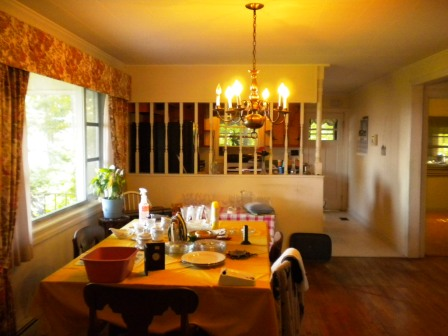
Only a short distance to the intracoastal waterway.
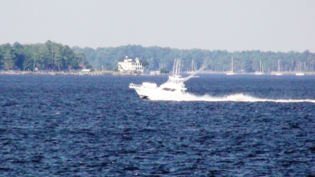
Plenty of back yard for parties
One of the few homes in the area with a Basement
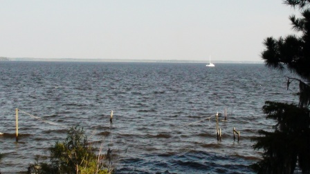
Enjoy the moderate Winters and beautiful
spring and fall on the spacious screen in porch
Grill out year around
Call Steve today at 252 514 9157 to learn
more about this unique home.
Riverbend Lakefront
$137,500
Too late-Sold
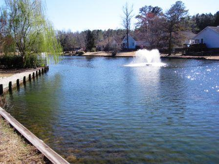
Great views, great home, great price
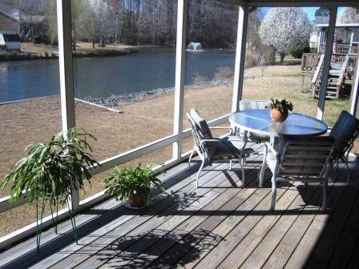
Riverbend offers, golf, tennis, boating, and miles of pedestrian
friendly roads.
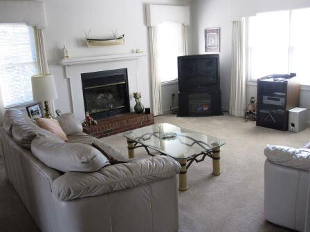
Call Steve Tyson 252 514 9157 or email SteveTyson@NCmove.com
to learn more about this great buy!
Spectacular Riverbend Waterfront
104 Gangplank Road UNDER
CONTRACT
Amazing price for this much home on the water
$399,000-To Late-Sold

If you are looking for deep protected water in a community that
offers golf, tennis, and biking, than we have the perfect house for
you. Four to five feet of water at the end of your dock will allow
you to keep a large boat in your back yard.
.JPG)
From this protected inland lake it is only a few hundred yards to
the Trent River and great boating opportunities. Perfect for
fishermen or just those that want to enjoy the waters of the
beautiful Trent river.
Attention Golfers. From Gangplank it is only 1/4 mile to the
spectacular Riverbend Golf Course.
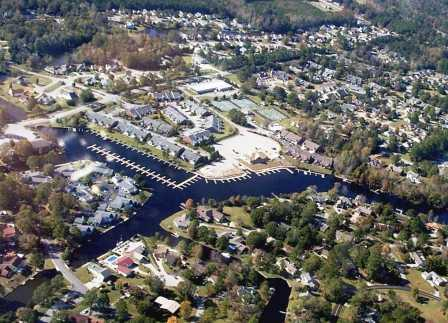
Riverbend, shown above from the air, is located about 10 minutes from
New Bern, 30 minutes from Cherry Point and Camp LeJeune, and 40 minutes from Atlantic
Beach or Emerald Isle. This quaint town is a great place to call
home for retirees, working professionals, or military.
Call Steve Tyson at 252 514 9157 for more information on this
waterfront home.
Best valued Waterfront home in New Bern
Only $289,000
Ride your bike to historic downtown New Bern
403 Harbor Drive UNDER
CONTRACT
Sit on your screen porch and see
awesome views of majestic Neuse River

Located just a short distance
from downtown New Bern this is one of the best waterfront homes for
the price you will find anywhere.

Bright kitchen has a view of the mighty Neuse
River.

For more information on this incredible waterfront residence call New Bern's Waterfront authority Steve Tyson
Where History meets the water
3600 Camelot
$500,000
Too late-Sold
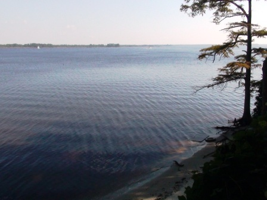
Enjoy the beautiful vistas of the Mighty Neuse River while you
relax on your back deck enjoying life. Or stroll down to your own
private beach and scour the sand for shells or driftwood. Located on
Fort Thompson, the last line of defense for New Bern during the
Civil War.
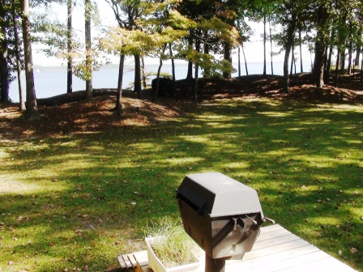
The mounds shown in the picture above were cannon emplacements
during the Battle of New Bern. 3600 Camelot is located on the site
of Fort Thompson which was the main defense line of New Bern.
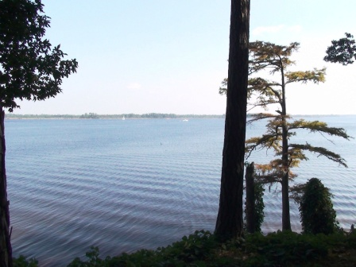
This unique home is a one of a kind. For more information call me
today at 252 514 9157.
640 Goose Creek Drive
Magnificent private sunsets
$600,000

The picture above was shot near 640 Goose Creek Road. This home
has recently had a gorgeous interior makeover. Outrageous views of
the Trent River. New Flooring & Paint. Gourmet kitchen-granite
tops & stainless appliances. 3-sided fireplace.
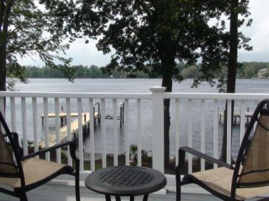
Master Suite has a
private balcony. What better way to finish off a long day than to
watch the sunset on your private 2nd floor balcony.
.JPG)
Your private dock has a boat lift and 2 separate jet ski lifts.
This makes boating about as easy as it gets. Cap off that long day
at work with a refreshing boat ride. Great buy for only $600,000
2814 Old Cherry Point Road
.JPG)
Waterfront Estate. Tree-Lined Drive leading up to an
AWE-INSPIRING Home. Overlooking miles-wide
Neuse River. PICTURESQUE Sandy Beach and HUGE Party Cabana. Southern
Mansion!
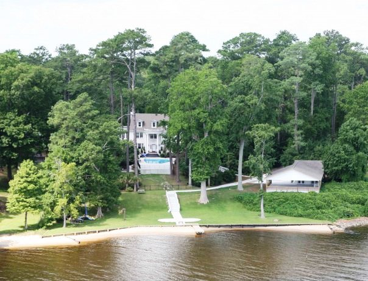
Five acres of
Park-Like Grounds-Pool, Hot tub and bath house. Only 7 minutes from
Historic Downtown New Bern.

Helicopter not included.
For more information and a virtual tour call Steve Tyson today.
2418 Turtle Bay
One of New Bern's most sought after neighborhoods.
$325,000 Short Sale
UNDER CONTRACT

Park your boat out back and enjoy access to all of the area
waterways. Fantastic Home in one of New Bern's finest
neighborhood's. A rare price for this neighborhood on the
waterfront.
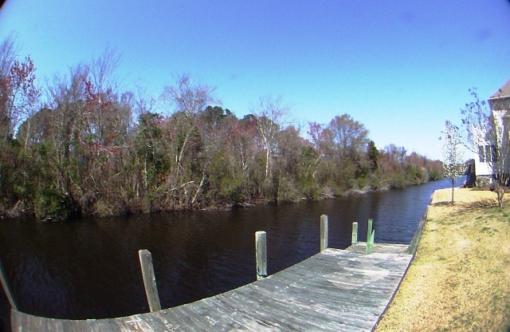
Oversized Eat in kitchen with Island, large ground floor master
suite, wonderful Enclosed Porch overlooking water.
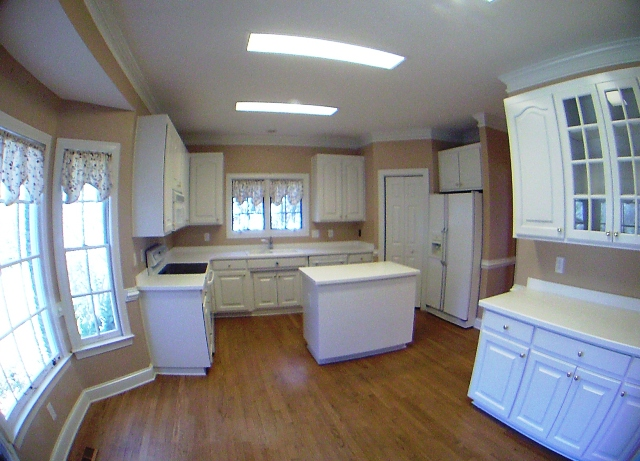
For more information on this property call Steve Tyson 252 514 9157
122 Moore's Farm Road UNDER
CONTRACT
$275,000
This historic farm house was built
in 1900. It has endured the time and is now waiting for someone like
you that will enjoy her beauty.

Why go to the beach when you can stay at home and enjoy your own
private beach?
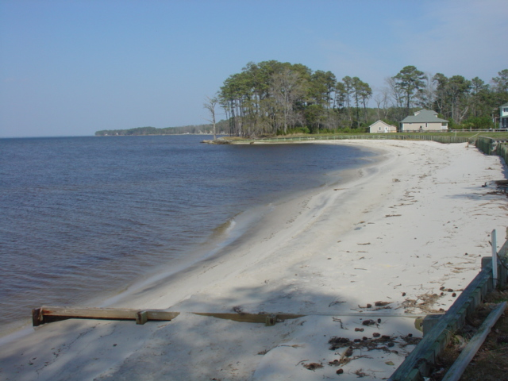
The view here shows the mighty Neuse on a calm day. From your
back yard you could be in the intracoastal waterway. I don't think
you can find a more incredible waterfront view
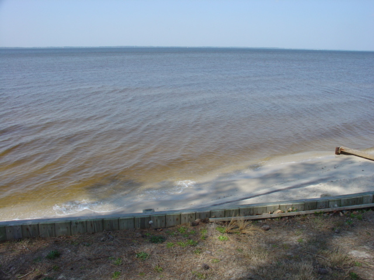

Steve Tyson is a certified E-pro. Only 4%
of Real estate Brokers have achieved this certification.
For those that don't care to live on the water,
there are plenty of public access points to launch your boat or
kayak.
While in New Bern Stay at the Iconic Ziegler Hotel
www.newbernzig.com
The Tyson Group are your New Bern Waterfront Authorities
1-888-675-9595 Toll Free or 252-514-9157 Cell
|